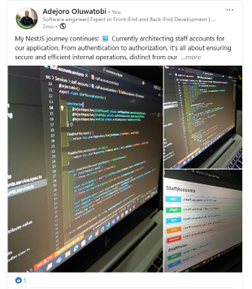

Backend & NestJS 6 min read
Published
•
Software Development Guide
Creating Scalable E-Commerce Endpoints Using Node.js & NestJS Technology
A comprehensive architectural walkthrough examining how to architect robust, type-safe e-commerce endpoints with NestJS. Covers dependency injection, payload validation pipes, controller-service separation, and database transaction consistency.
NestJS
Node.js
TypeScript
REST APIs
bit.ly/46uFXSL